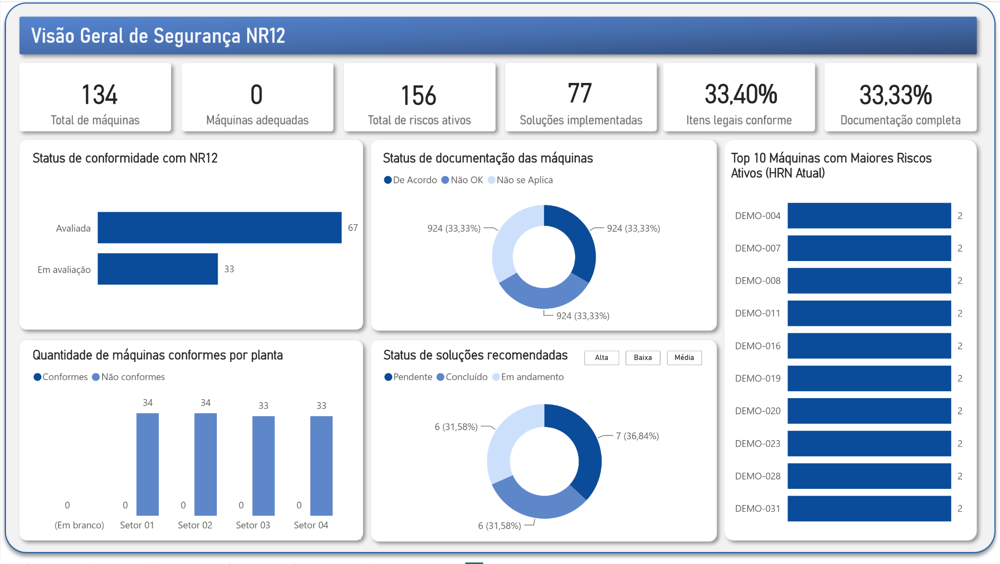
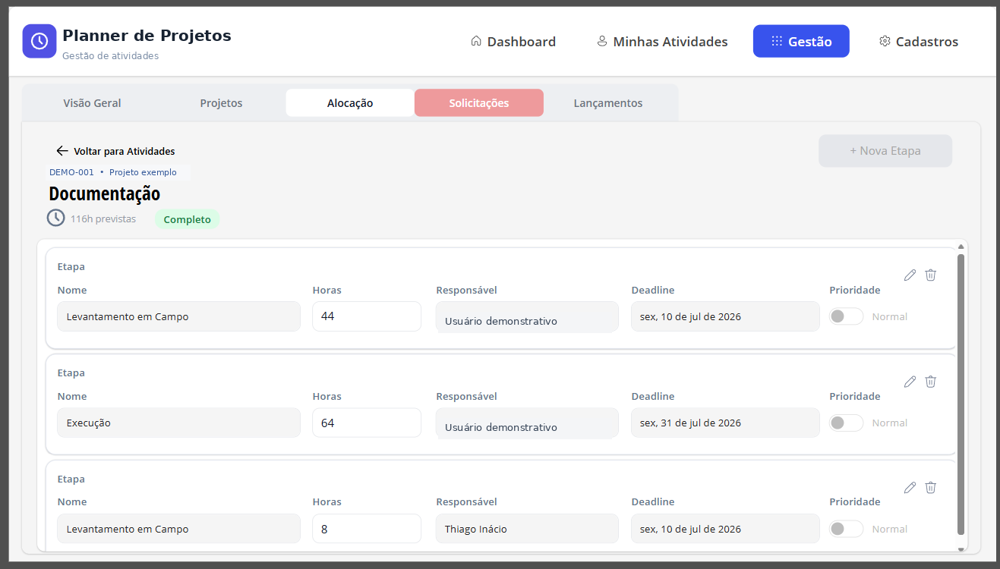
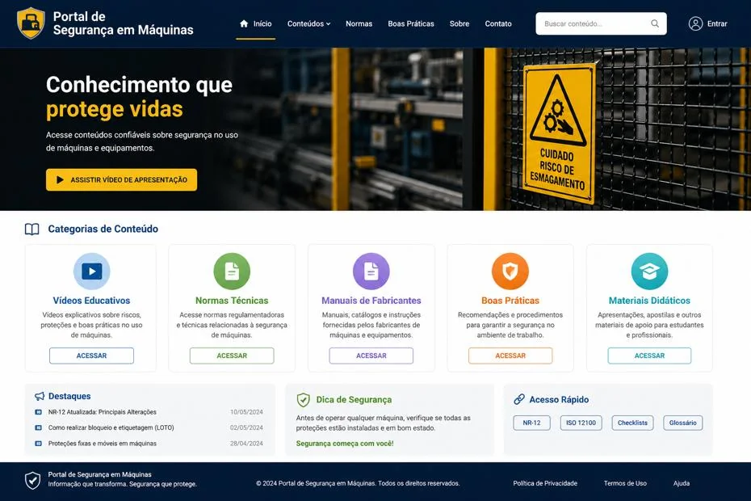

Segurança de máquinas
Experiência consolidada em NR-12, apreciação de riscos e projetos de segurança industrial, incluindo ISO 12100 e ISO 13849-1.
Venho da área técnica e da engenharia, onde aprendi a entender os problemas antes de pensar nas ferramentas. Hoje aplico essa experiência no tratamento de dados, na criação de indicadores e no desenvolvimento de aplicações e automações.

Minha experiência na indústria me ajuda a compreender as rotinas e necessidades de quem vai utilizar os dados. Também trabalho na organização de informações e no desenvolvimento de soluções digitais voltadas ao uso real.
Na área de tecnologia, venho aplicando Power Apps, Power Automate, Power BI, Excel e SQL, além de desenvolver projetos em Java, TypeScript e Next.js durante minha formação em ADS.
Dados, automação e desenvolvimento com experiência prática em processos industriais.
Experiência consolidada em NR-12, apreciação de riscos e projetos de segurança industrial, incluindo ISO 12100 e ISO 13849-1.
Tratamento e organização de dados, indicadores em Power BI, aplicações internas e automação de processos.
Projetos acadêmicos e pessoais em desenvolvimento web, APIs, bancos de dados e regras de negócio.
Trabalhos desenvolvidos, protótipos e estudos, cada um identificado pelo seu estágio.
Painel de riscos, conformidade e plano de ações para apoiar prioridades técnicas e acompanhamento de investimentos.

Aplicação Canvas para organizar projetos, atividades, solicitações e acompanhamento de horas.

Kanban de solicitações e acompanhamento do processo de emissão de ARTs.

Consulta e organização de certificados de dispositivos de segurança, com validade e situação documental.

API REST em Java com 12 endpoints documentados e testes HTTP registrados no Postman.

Modelagem relacional e consultas SQL com JOIN e GROUP BY para responder questões de negócio.

Conceito de portal que organiza conteúdos de segurança de máquinas em uma experiência acessível.
Aplicação em desenvolvimento para organizar compras, receitas e despesas de pequeno negócio.
Outros estudos e protótipos documentados, com detalhes sobre o estágio de cada projeto.
Aberto a oportunidades em Análise de Dados, Business Intelligence, Power Platform e automação de processos.
Enviar e-mail ↗